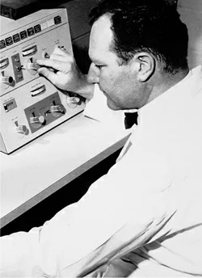

A new kind of medical battlefield
After the decline of radical mastectomy, one might expect cancer medicine to become more cautious about aggressive treatment. Instead, the philosophy of more is better moved from the operating room to the chemotherapy ward.
During the 1970s, many oncologists believed that cancer could be defeated by increasingly powerful combinations of toxic drugs. If a small dose failed, perhaps a larger dose would succeed. If three drugs were insufficient, perhaps five or eight could overwhelm malignant cells.
The hospital chemotherapy ward became the center of this approach. Patients lived inside a tightly controlled environment of intravenous medicines, blood tests, transfusions, infections, and repeated rounds of treatment.
Mukherjee warns us not to confuse the doctors' confidence with the patients' experience. For patients, this was often a place of pain, nausea, exhaustion, fear, and uncertainty. The war metaphor described the physicians' ambition; the people inside the wards had to endure the battle.
Stewart Alsop sees the human cost (1973)
In 1973, journalist Stewart Alsop entered an NIH ward to receive treatment for a rare blood cancer. He described a disturbing world in which treatment itself could visibly transform bodies.
Patients were recognizable by pallor, altered skin color, and other signs of severe illness or chemotherapy toxicity. They lived according to rigid hospital schedules and often faced prolonged isolation from their former lives.
Even the word cancer was sometimes avoided, as if the people living with the disease could be protected by not naming it. The wards could be painted in cheerful colors, and nurses wore smiling-face buttons. Yet the manufactured optimism felt painfully distant from the conditions patients were enduring.
Alsop also noticed a troubling tension in research hospitals: doctors were treating an individual patient, but they were simultaneously gathering knowledge intended to help future patients. These goals could support one another, yet they were not always identical.
The accidental discovery of cisplatin
The chapter then tells the scientific story of cisplatin, one of the most important chemotherapy drugs of the era.
In 1965, biophysicist Barnett Rosenberg at Michigan State University was studying whether electrical currents affected bacterial growth. He placed platinum electrodes in a solution containing bacteria and switched on the current.
Something unexpected happened: the bacteria stopped dividing normally.
At first, Rosenberg assumed the electricity caused the effect. But further experiments showed that the active agent was a platinum-containing chemical formed through reactions involving the electrode and solution.
The compound was cisplatin, a substance known to chemists but not previously established as an anticancer medicine. The important effect was chemical, not electrical.
This is another example of a recurring theme in the book: an experiment designed to answer one question unexpectedly creates the answer to a completely different one.
How cisplatin works: A simple DNA example
Every dividing cell must copy its DNA. Cisplatin can attach to DNA and create chemical links that interfere with normal DNA structure and replication.
Imagine a book that must be copied so two new cells can each receive a complete set of instructions. If several pages become stuck together, the copying process may fail. The cell may stop dividing or die because it cannot handle the damage.
Cisplatin's effect on DNA can be especially powerful against certain cancers. But it is not perfectly selective: healthy tissues can also be injured. That explains why a useful anticancer drug can have serious side effects.
| What cisplatin can do | Why it matters |
|---|---|
| Damage cancer-cell DNA | Can prevent malignant cells from multiplying |
| Damage normal tissue | Can cause substantial toxicity |
| Work in a drug combination | Can help treat some cancers more effectively |
| Fail in other diseases | One successful drug is not a universal cure |
The importance of cisplatin comes from both sides of this equation: genuine anticancer power and the limits imposed by its toxicity.
John Cleland receives a frightening diagnosis (1973)
Mukherjee introduces John Cleland, a 22-year-old veterinary student in Indiana. He had recently married when he discovered a growing lump in his right testicle in 1973.
After medical evaluation and surgery, doctors found that the cancer had already spread into his lymph nodes and lungs. He had metastatic testicular cancer.
At the time, the prognosis was terrible. The book describes survival for metastatic cases as below 5 percent in that period.
Cleland began treatment with oncologist Larry Einhorn at Indiana University. The initial drug combination, called ABO, offered only limited benefit. Cleland spent long periods in the hospital and became desperately weak.
His weight fell from roughly 158 to 106 pounds. During one outing suggested by his wife, he discovered that he was too weak even to stand. His illness had taken away independence and dignity as well as physical strength.
An experimental three-drug combination
By the fall of 1974, Cleland's existing treatment was failing. Einhorn proposed another approach: combine cisplatin with two other drugs, bleomycin and vinblastine.
This regimen was called BVP, with P representing platinum. Cleland became the first patient in the new treatment program on October 7, 1974.
Ten days later, imaging showed that the visible tumors in his lungs had disappeared. The response was astonishing. Cleland called his wife to share the news, barely able to recall what he said.
As Einhorn treated additional patients, major responses appeared again. Some patients did not relapse. By 1975–1976, the evidence increasingly suggested something much more important than temporary improvement: some advanced testicular cancers could be cured with combination chemotherapy.
For cancer medicine this was an extraordinary achievement. A solid cancer that had spread throughout the body could, in certain patients, respond dramatically to systemic drugs.

Why the success inspired so much optimism
Einhorn had demonstrated that combination chemotherapy could sometimes succeed where surgery alone could not. The discovery seemed to reinforce the earlier triumphs against childhood leukemia and Hodgkin lymphoma.
Researchers began wondering whether the same method could cure other advanced solid tumors: lung, breast, ovarian, colon, and brain cancers. The National Cancer Institute's funding was expanding, and the institution could test huge numbers of chemicals and drug combinations.
The vocabulary of treatment increasingly became a collection of letter-based regimens: one combination after another, each representing a particular set of medicines.
The mistaken leap was to assume that because several cancers were curable with aggressive chemotherapy, most cancers would become curable by making chemotherapy more aggressive. Different cancers have different biological vulnerabilities, even if they share the name cancer.
Cisplatin's devastating toxicity
Cisplatin's effectiveness came with a severe physical price. At that time, modern anti-nausea treatments were limited. Patients often experienced violent, repeated vomiting and needed intravenous fluids to avoid dehydration.
Mukherjee reports an average of about twelve episodes of vomiting per day among some cisplatin-treated patients in that era. The drug acquired a dark nickname from nurses because it could leave patients collapsed by nausea.
The chapter also invokes the play Wit, in which a patient undergoing chemotherapy is overwhelmed by treatment and by clinicians who seem unable to recognize the full reality of her suffering.
Doctors could regard nausea, loss of hair, or emotional distress as minor compared with the risk of death from cancer. But the person receiving treatment experienced these effects every day.
A toxicity can be medically labeled manageable yet remain devastating to a patient's life.
A factory of drugs: The NCI in the late 1970s
With funding from the National Cancer Act, the NCI greatly expanded its programs for screening and testing potential anticancer chemicals. Many drugs were discovered by exposing cells to different compounds and looking for evidence of cell killing.
The chapter mentions several important medicines, each with its own origin and toxicity:
| Drug | Origin or defining characteristic | Significant limitation mentioned |
|---|---|---|
| Cisplatin | Platinum-containing DNA-damaging compound | Severe nausea and other toxicity |
| Taxol | Derived from Pacific yew trees | Difficult early sourcing and toxicity |
| Adriamycin | A red-colored anticancer antibiotic | Can damage heart tissue |
| Etoposide | Derived from a plant compound related to mayapple | A cytotoxic drug with important side effects |
| Bleomycin | Derived from a microorganism | Can cause lung damage |
These were powerful discoveries. Yet the basic research strategy was often empirical: find substances that kill cancer cells, then test which combinations patients can survive.
The biology of why one cancer responded and another resisted was still incompletely understood.
Another genuine cure: Burkitt lymphoma
Researchers Ian Magrath and John Ziegler developed a multi-drug approach for Burkitt lymphoma, an aggressive cancer especially studied in children in Africa.
The regimen contained seven drugs and produced important cures. Many of the studies described in the book took place in Uganda, where the disease was common.
This gave oncologists another reason for hope. They now had multiple examples showing that chemotherapy could cure particular cancers that once seemed untreatable.
But the successes were concentrated in certain diseases. They did not establish that every cancer would respond similarly.
This distinction is essential: the right treatment can be extraordinarily effective in one cancer and ineffective in another.
The dangerous belief that doubling the dose doubles the benefit
The excitement led researchers to test increasingly intense regimens. One trial doubled the dose of cisplatin in testicular cancer; toxicity increased, but the higher dose did not provide extra therapeutic benefit.
An especially disturbing experiment was the eight-in-one regimen for children with brain tumors. The treatment combined eight drugs in a single day.
The book reports serious complications: some children needed blood transfusions, some suffered life-threatening infections or kidney damage, and several lost hearing. One died of septic shock. Yet the improvement in cancer control was very limited.
The implication was devastating. The treatment could do much more harm without producing a corresponding benefit.
A combination that is biologically effective against one tumor cannot simply be intensified and applied to unrelated tumors with an expectation of success.

A year of life is meaningful, but it is not a cure
Mukherjee refuses to dismiss partial advances. For some advanced cancers, chemotherapy added months of survival. A few extra months or a year can mean birthdays, family conversations, unfinished work, and experiences patients otherwise would have missed.
But he also refuses to describe these extensions as cures. In many common metastatic solid tumors, increasingly complex chemotherapy combinations produced modest gains without durable eradication of disease.
During 1984–1985, thousands of medical papers on chemotherapy appeared, yet Mukherjee notes that none described a new strategy that definitively cured an advanced solid tumor through combination chemotherapy alone.
This is not an argument that chemotherapy is worthless. It is a warning about overgeneralizing from selected successes and using the wrong word to describe an outcome.
Rose Kushner challenges the smiling oncologist
Breast-cancer advocate Rose Kushner criticized the gap between physicians who administered treatment and patients who endured it.
For doctors, a side effect might be classified as tolerable because it did not immediately threaten life. For patients, hours of vomiting, hair loss, damaged relationships, financial strain, or loss of self-respect could profoundly change what life felt like.
Kushner's criticism was not merely about bedside manners. It was about what medicine chose to measure and value. A treatment's success should not be judged only by shrinking tumors or avoiding death in the short term.
Patients need doctors to take their experiences seriously, including symptoms that may not appear prominently in research tables.
What this chapter is really asking
Mukherjee holds two truths together. Chemotherapy produced genuine cures in diseases such as metastatic testicular cancer and some lymphomas. At the same time, the belief that ever-higher doses would cure every cancer led to suffering, failed trials, and distorted expectations.
The doctor's responsibility is not only to fight the tumor. It is to recognize when treatment helps, when it merely adds toxicity, and when patients need relief rather than another assault.
Chapter takeaway: Successful cancer treatment is not measured by how much poison a patient can endure. It is measured by meaningful benefit—survival, relief of suffering, and the life that treatment makes possible.